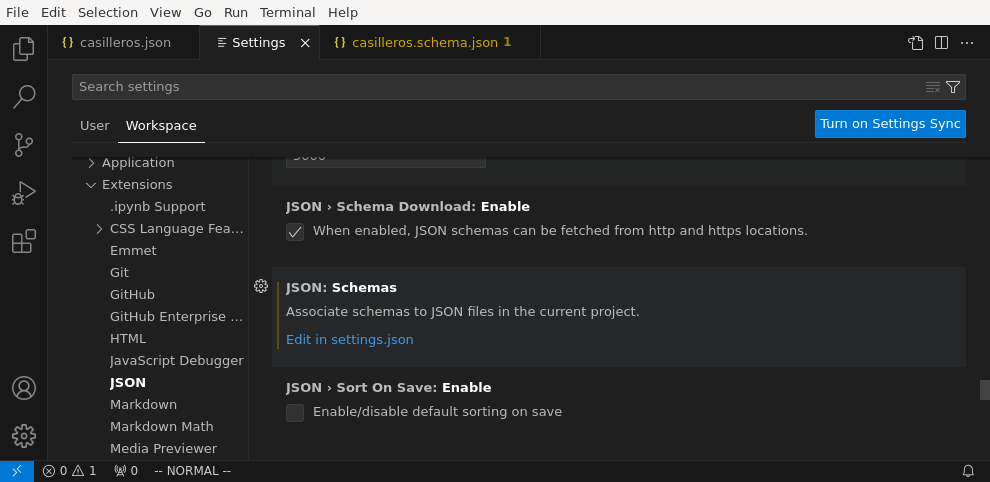

2.2. JSON Schema¶
La definición de gramáticas para documentos JSON no está tan madura como para documentos XML. Hay distintas alternativas, de las cuales la más extendida es JSON Schema, que puede utilizarse tanto en la definición de documentos JSON como de documentos YAML.
Dedicaremos el epígrafe a describir cómo se utiliza JSON Schema.
2.2.1. Preliminares¶
Antes de entrar a definir su sintaxis es conveniente saber algunos aspectos de JSON Schema:
Define gramáticas de documentos JSON (o YAML) usando un formato JSON.
No tiene tanta madurez como la definición de gramáticas para XML.
Existen nueve versiones del borrador de su especificación: la siete primeras nombradas mediante un ordinal (Draft 1, Draft 2, etc.) y las dos últimas con la fecha en que se publicaron: 2019-09 y 2020-12. En consecuencia a fecha de redacción de este documento el borrador más reciente es el 2020-12.
Nota
Obviamente, si se pretende definir una gramática de YAML con JSON
Schema, sólo podremos escribir en el YAML aquello que puede escribirse en
un JSON. Por ejemplo, no podremos usar undefined o deberemos hacer que
todas las claves sean cadenas, a pesar de que YAML no tiene esas
limitaciones.
Ver también
Como la especificación es muy árida, ilustraremos aquí los aspectos más básicos, pero para mayor profundización puede echarse mano de la guía oficial Understanding JSON Schema.
2.2.1.1. Ejemplo¶
Tomemos la versión JSON del ejemplo introductorio:
Casilleros
{
"centro": "IES Pepe Botella",
"profesores": [
{
"id": 1,
"apelativo": "Luis",
"nombre": "Luis",
"apellidos": "Márquez Vázquez",
"departamento": "Educación Física"
},
{
"id": 13,
"apelativo": "Cristina",
"nombre": "María Cristina",
"apellidos": "Prieto Monagas",
"departamento": "Biología y Geología"
},
{
"id": 15,
"apelativo": "Manolo",
"nombre": "Manuel",
"apellidos": "Páez Robledo",
"departamento": "Matemáticas"
},
{
"id": 17,
"casillero": [17, 43],
"apelativo": "Lucía",
"nombre": "Lucía",
"apellidos": "Gálvez Ruiz",
"departamento": "Inglés"
},
{
"id": 17,
"casillero": [28],
"apelativo": "Migue",
"nombre": "Miguel Ángel",
"apellidos": "Campos Sanchez",
"departamento": "Historia"
},
{
"id": 81,
"casillero": [],
"apelativo": "Vero",
"nombre": "Verónica",
"apellidos": "Martín Díaz",
"departamento": "Biología"
},
{
"id": 86,
"sustituye": 15,
"apelativo": "Roberto",
"nombre": "Roberto",
"apellidos": "Mínguez Torralbo"
}
]
}
Este JSON se ajusta al siguiente esquema:
Gramática de Casilleros con JSON Schema
{
"$schema": "https://json-schema.org/draft/2020-12/schema",
"$id": "casilleros.schema.json",
"type": "object",
"title": "Casilleros",
"description": "Asignación de casilleros a profesores",
"properties": {
"centro": {
"type": "string",
"description": "Nombre del centro de enseñanza"
},
"profesores": {
"type": "array",
"description": "Relación de profesores",
"items": {
"type": "object",
"properties": {
"id": {
"type": "integer",
"description": "Identificador único del profesor",
"minimum": 0
},
"sustituye": {
"type": "integer",
"description": "Identificador del profesor al que sustituye",
"minimum": 0
},
"casillero": {
"type": "array",
"items": {
"type": "integer",
"minimum": 0
},
"uniqueItems": true
},
"apelativo": {
"type": "string",
"descripcion": "Nombre por el que se le conoce"
},
"nombre": {
"type": "string",
"descripcion": "Nombre de pila"
},
"apellidos": {
"type": "string",
"descripcion": "Apellidos"
},
"departamento": {
"type": "string",
"descripcion": "Departamento didáctico al que pertenece"
}
},
"additionalProperties": false,
"required": ["id", "nombre", "apellidos"],
"oneOf": [
{
"required": ["departamento"],
"not": { "required": ["sustituye"] }
},
{
"required": ["sustituye"],
"allOf": [
{"not": { "required": ["departamento"] }},
{"not": { "required": ["casillero"] }}
]
}
]
},
"minItems": 1
}
},
"additionalProperties": false,
"required": ["centro", "profesores"]
}
Como puede verse, el documento es en sí un documento JSON y tiene un modo algo particular (y nada intuitivo) de expresar una ocurrencia de nodos, que se habría resuelto muy fácilmente con DTD:
(id, apelativo?, nombre, apellidos, ((departamento, casillero?)|sustituye))
2.2.1.2. Validación¶
Antes de empezar, no obstante, es conveniente saber cómo validar:
Validador online, que tiene el inconveniente de que no pueden subirse archivos locales.
La orden jsonschema, disponible a través del paquete python3-jsonschema de las distribuciones basadas en Debian.
$ jsonschema -i casilleros.json casilleros.schema.json
La orden no mostrará salida (y devolverá un 0 al sistema) si el documento respeta la gramática definida en el esquema. En principio, sólo es capaz de validar documentos JSON, pero para validar YAML puede hacerse una conversión previa a JSON con yq.
El todo terreno Visual Studio Code, que sirve para validar tanto JSON como YAML. Sin embargo, requiere en ambos casos configuración adicional:
- JSON
El soporte es nativo, como ya vimos, pero requiere configuración. En
File>Preferences>Settings(o, simplemente, Ctrl+,) debemos consultar la extensión para JSON, una de cuyas configuraciones esJSON: Schemas:Al pinchar en la edición se nos abrirá el archivo de configuración
settings.jsonque nos permite relacionar archivos JSON con los esquemas que usan. Por ejemplo:
Este es un proyecto abierto como una carpeta en que el esquema está en la propia carpeta raíz y se ha definido la relación entre archivos JSON y esquemas así:
{ "json.schemas": [ { "fileMatch": ["casilleros*.json"], "url": "/casilleros.schema.json" } ] }
La propiedad
json.schemases una secuencia, cada uno de cuyos elementos es un objeto que serve para referir un esquema distinto. En él,fileMatches la lista de archivos que siguen el esquema, mientras queurlindica la URL (que no propiamente la ruta) del esquema. Podríamos haber escrito una URL absoluta (con file:file:///etc.), pero dado que la URL base es la propia carpeta del proyecto, hemos preferido una URL relativa.- YAML
Como ya se indicó al tratar su sintaxis, requiere instalar la extensión para YAML y, como en el caso anterior, relacionar el archivo con su esquema correspondiente. La configuración es muy semejante, salvo que se encuentra dentro de la extensión YAML, y que el JSON de configuración no es exactamente igual:
{ "yaml.schemas": { "./casilleros.schema.json": "casilleros*.yaml" } }
En este caso,
yaml.schemases un objeto y cada objeto tiene como claves la ruta al esquema (no una URL como antes) y como valor el archivo o los archivos que se rigen por el esquema. Cuando son varios, es necesario usar una secuencia:{ "yaml.schemas": { "./casilleros.schema.json": ["casilleros*.yaml", "*casilleros.yaml"] } }
2.2.2. Sintaxis básica¶
Ya sabemos que un documento JSON está constituido por nodos, cada uno de los cuales tiene un tipo. Construir el esquema de un documento JSON consiste básicamente en definir los subesquemas que describen cada uno de sus nodos[1].
No nos proponemos profundizar mucho, ya que tienen algo más de complejidad que los DTD.
2.2.2.1. Esquema del nodo raíz¶
Antes de analizar cómo se define el esquema de cada nodo en general, es preciso indicar las particularidades del nodo raíz. Un nodo raíz tiene este aspecto:
{
"$schema": "URN-del-esquema-JSON-que-se-usa",
"$id": "URL-del-documento",
# Descripción del nodo
}
donde:
$schemaEs la URN de versión de JSON Schema que hemos usado en el archivo. La de la última (2020-12) es la que hemos expresado en el ejemplo.
$idEs la URL donde se encuentra el archivo con el esquema que estamos definiendo. Tiene utilidad cuando el esquema necesita referir subesquemas que se encuentran definidos en otros archivos. Si no es el caso, puede dejarse sin definir esta propiedad o indicar, simplemente, el nombre del archivo.
Nota
En nuestro ejemplo, no hemos usado una URL porque no estamos escribiendo un esquema público para uso general.
El resto de parejas clave/valor que pueden encontrarse en la raíz describen qué contiene el nodo raíz y, por tanto, serán las claves típicas de un subesquema de nodo. Eso sí, como el nodo raíz de un documento JSON sólo puede ser un mapa o una secuencia, estas claves típicas sólo podrán ser las típicas de un nodo secuencia (array) o de un nodo mapa (map). En el ejemplo, el nodo raíz es un mapa por lo que el esquema inicial podría quedar en principio como:
{
"$schema": "https://json-schema.org/draft/2020-12/schema",
"$id": "casilleros.schema.json",
"type": "object",
"title": "Casilleros",
"description": "Asignación de casilleros a profesores",
"properties": {
}
}
ya que cualquier subesquema de nodo nos permite añadir un título y una
descripción y el nodo mapa en particular nos pide al menos indicar cuáles son
las propiedades (o sea, las parejas clave/valor) lícitas, para lo cual debemos
usar la propiedad properties.
Nota
Dado que en principio no es obligatorio definir todas las propiedades del objeto, un esquema tan simple como éste nos validará el documento JSON. Bien es cierto que sirve de poco, porque la única limitación que introduce es que el nodo raíz es un mapa y no secuencia.
2.2.2.2. Subesquemas de nodo¶
Cómo se describa un nodo, depende fundamentalmente de su tipo (no es lo mismo describir qué debe cumplir un nodo numérico que un nodo secuencia, por ejemplo). Ahora bien, hay propiedades comunes a todos los nodos.
titlepermite indicar un título para el nodo.
descriptionpermite describir qué contiene el nodo de una manera más prolija.
defaultpermite indicar el valor predeterminado, en caso de que el nodo no aparezca.
enumdefine una lista de valores válidos para el nodo, fuera de los cuales debe producirse un error. Por ejemplo:
{ "type": "integer", "description": "Este es un entero con sólo unos pocos valores válidos", "enum": [1, 32, 55] }
es un subesquema que indica que el nodo es un entero con sólo tres posibles valores válidos.
Nota
En realidad, si especificamos cuáles son todos los valores válidos, ya no es necesario especificar el tipo, así que es mejor definir así:
{ "description": "Este es un entero con sólo unos pocos valores válidos", "enum": [1, 32, 55] }
constdefine el único valor válido para el nodo por lo que equivale a un
enumcuya lista sólo contenga un valor.{ "description": "Este es un entero con sólo unos pocos valores válidos", "const": 32 }
Estas propiedades que acabamos de enumerar son aquellas que podemos encontrar sea cual sea el tipo del nodo. Ahora bien, ¿cuáles son específicas?
- numeric (que comprende integer y number)
Tiene asociadas propiedades que no requieren demasiada explicación:
minimum/exclusiveMinimumdefine el valor mínimo (incluido y sin incluir respectivamente).
maximum/exclusiveMaximumdefine el valor máximo (incluido y sin incluir respectivamente).
multipleOffuerza a que el valor sea múltiplo del indicado.
- string
El tipo tiene también algunas propiedades particulares:
minLengthdefine el número mínimo de caracteres que puede contener la cadena.
maxLengthdefine el número máximo de caracteres que puede contener la cadena.
patterndefine una expresión regular que se usará como patrón para comprobar la validez de la cadena. Las expresiones regulares que define Javascript son prácticamente los patrones ERE y PCRE que pueden consultarse en estos apuntes. Por ejemplo:
{ "type": "string", "description": "Este dato sólo podrá contener cadenas de tres caracteres", "pattern": "^...$" }
formatdispone que la cadena cumple con un formato predefinido determinado. Por ejemplo:
{ "type": "string", "description": "El valor tendrá que ser una fecha con la forma AAAA-MM-DD", "format": "date" }
Ver también
Los formatos predefinidos se encuentran enumerados en la especificación.
Prudencia
La especificación nos advierte de este campo sólo tiene valor informativo y no afecta a la validación, por lo que una cadena que no cumpla con el formato no tiene por qué producir un error en la validación.
- null
Dado que sólo hay un valor posible, no tiene ninguna propiedad adicional.
- boolean
Tampoco presenta ninguna propiedad adicional.
- array
Al no ser la secuencia un valor escalar (a diferencia de todos los anteriores) su definición es algo más compleja. Las propiedades más sencillas de entender son:
minItems/maxItemses la cantidad mínima (o máxima) de elementos que debe contener la secuencia. Por lo tanto, nos sirve para restringir la longitud de la secuencia.
uniqueItemsfuerza a que no haya dos elementos iguales en la secuencia. Por ejemplo:
{ "type": "array", "uniqueItems": true, "minItems": 2 }
forzaría a que la secuencia contuviera al menos dos elementos y que todos fueran distintos entre sí.
containsindica que la secuencia contiene al menos un elemento con las características del que se indica. Por ejemplo, la secuencia:
{ "type": "array", "contains": { "enum": [1, 34, 56] } }
puede tener todos los elementos que se quiera y del tipo que se quiera, pero uno al menos debe ser 1, 34 o 56.
minContains/maxContainsfuncionan en conjunción con contains e indican la cantidad mínima o máxima de elementos que deben cumplir con el subesquema incluido en él. Así, en el ejemplo anterior, no se especificó ninguno de estas dos propiedades, por lo que con que haya un elemento que cumpla la prescripción de contains la validación tiene éxito. En cambio, si hacemos:
{ "type": "array", "contains": { "enum": [1, 34, 56] }, "minContains": 4 }
tendrá que haber al menos cuatro elementos que cumplan con el esquema de contains.
itemsindica el esquema que deben cumplir todos los elementos que constituyen la secuencia. Por tanto, definida así:
{ "type": "array", "items": { "type": "integer", } }
la secuencia sólo podrá contener enteros. Si
itemstiene el valorfalse, no podrá contener elementos:{ "type": "array", "description": "Esto valida una secuencia vacía", "items": false, }
prefixItemstiene utilidad cuando a diferencia del caso anterior, cada elemento de la secuencia tiene un esquema diferente:
{ "type": "array" "prefixItems": [ {"type": "integer"}, {"type": "string"} ] }
En este ejemplo, el primer elemento debe ser un entero y el segundo una cadena, aunque la validación también tendrá éxito cuando haya más de dos elementos (y éstos no están sujetos a ninguna condición) o incluso cuando haya menos. Todos estas secuencias son válidas:
[5, "x"] [6, "y", true. null] [5] []
Nota
Nótese que podríamos establecer que los elementos fueran exactamente 2 añadiendo al esquema minItems y maxItems.
La razón del nombre de la propiedad (prefixItems) es que esta propiedad define el esquema de los elementos anteriores a los definidos por items. Por eso, esta definición:
{ "type": "array" "prefixItems": [ {"type": "integer"}, {"type": "string"} ], "items": { "const": 32 } }
obligaría a que a partir del tercer elemento (si los hubiere, todos fueran el número 32).
- object
El subesquema que describe un mapa es el que entraña más dificulta. La propiedad fundamental es:
propertiesque permite describir las propiedades que pueden encontrarse en el objeto. Por ejemplo, un mapa con este aspecto:
{ "nombre": "Pedro Martínez Álvarez", "edad": 32, "casado": true, "hijos": [ "Felipe", "Sonsoles" ] }
podríamos definirlo así:
{ "type": "object", "properties": { "nombre": { "type": "string"}, "edad": { "type": "integer", "exclusiveMinimum": 0}, "casado": { "type": "boolean", "default": false}, "hijos": { "type": "array", "items": { "type": "string" } } } }
Como puede apreciarse la claves de
propertiesdefinen las claves del propio mapa a definir y los valores el subquema que define el nodo valor. De los nodos que representan las claves, no hay en principio mucho que definir, puesto que deben ser cadenas, así que no hay esquema para ellos.
La definición de
properties, sin embargo, no obliga a que las únicas claves posibles sean las definidas ni a que aparezcan todas. Para ello, podemos añadir otras propiedades:requiredLista la propiedades que son obligatorias. Por ejemplo:
{ "type": "object", "properties": { "nombre": { "type": "string"}, "edad": { "type": "integer", "exclusiveMinimum": 0}, "casado": { "type": "boolean", "default": false}, "hijos": { "type": "array", "items": { "type": "string" } } }, "required": ["nombre"] }
Una definición obliga a que el mapa siempre presente la propiedad «nombre».
additionalPropertiesDefine el esquema que deben cumplir las propiedades que no han sido listadas en properties (ni patternProperties). Por ejemplo:
{ "type": "object", "properties": { "nombre": { "type": "string"}, "edad": { "type": "integer", "exclusiveMinimum": 0}, "casado": { "type": "boolean", "default": false}, "hijos": { "type": "array", "items": { "type": "string" } } }, "required": ["nombre"], "additionalProperties": {"type": "string"} }
provocaría que los valores de las propiedades no definidas expresameente sólo pudieran ser cadenas. Si el valor, en vez de un subesquema, es
false, no se permitirá ninguna propiedad adicional.
patternPropertiesFunciona como properties, pero en vez de definir propiedades con un nombre concreto, define propiedades cuya clave cumple con un patron (una expresión regular). Por ejemplo, este esquema:
{ "type": "object", "properties": { "concreta": {"type": "integer"}, "tambienconcreta": {"type": "number"} } "patternProperties": { "^s-": {"type": "string"}, "^b-": {"type": "boolean"} }, "additionalProperties": false }
provoca que las claves válidas sean «concreta», «tambienconcreta», cualquier clave que empiece por «s-» y cualquier clave que empiece por «b-».
unevaluatedPropertiesno entraremos a tratarla extensamente, pero básicamente viene a complementar a additionalProperties. Esta segunda sólo es afectada por las propiedades enumeradas dentro de properties o a las que se ajustan en los patrones incluidos en patternProperties. En cambio, la segunda es capaz de comprobar propiedades que se encuentran dentro de esquemas condicionales o en esquemas referenciados. Por ejemplo:
{ "type": "object", "properties": { "nombre": { "type": "string"} }, "oneOf": [ { "properties": { "edad": { "type": "integer", "exclusiveMinimum": 0} }, "not": { "required": ["nacimiento"] } }, { "properties": { "nacimiento": { "type": "string", "format": "date"} }, "not": { "required": ["edad"] } } ], "required": ["nombre"], "unevaluatedProperties": false }
En este esquema,
edadynacimientoestán definidos dentro de un esquema condicional (con oneOf)[2], por lo que si usaramos additionalProperties, el documento JSON sería inválido si incluyéramosedadonacimiento.Ver también
Puede echarle un ojo a la exposición sobre la necesidad de incluir unevaluatedProperties en la especificación.
Además de las anteriores, hay otras también limitantes:
minProperties/maxPropertiesdefine la cantidad mínima o máxima de propiedades que puede presentar el objeto.
dependentRequireddefine qué propiedades deben existir en el objeto para que otra pueda aparecer. Por ejemplo, imaginemos que queremos que
casadoaparezca sólo siedadse incluyo en el mapa (que en principio no es obligatoria). En ese caso, habría que definir el esquema así:{ "type": "object", "properties": { "nombre": { "type": "string"}, "edad": { "type": "integer", "exclusiveMinimum": 0}, "casado": { "type": "boolean", "default": false}, "hijos": { "type": "array", "items": { "type": "string" } } }, "required": ["nombre"], "additionalProperties": false, "dependentRequired": { "edad": [ "casado" ] } }
Es decir, cada una de las claves es la propiedad que presenta dependencias y para cada una de ella, se listan las propiedades requeridas.
dependentSchemaspermite definir con más precisión la dependencia, ya que no se limita a comprobar la existencia, sino también a comprobar si los valores se ajustan a un determinado esquema. Por ejemplo, supongamos una sociedad en la que no se pudiera tener hijos (o al menos que recen legalmente como reconocidos), si no hay casamiento. En ese caso, la propiedad
hijosno sólo depende de que existacasado, sino que además ésta tenga un valor verdadero. Podríamos hacerlo así:{ "type": "object", "properties": { "nombre": { "type": "string"}, "edad": { "type": "integer", "exclusiveMinimum": 0}, "casado": { "type": "boolean", "default": false}, "hijos": { "type": "array", "items": { "type": "string" } } }, "required": ["nombre"], "additionalProperties": false, "dependentSchemas": { "hijos": { "properties": { "casado": { "const": true } }, "required": ["casado"] } } }
2.2.3. Combinación de esquemas¶
¿Qué ocurre si el valor del nodo no es exclusivamente de un tipo? Por ejemplo, un nodo que pueda ser un entero o un booleano. Para ese caso, hay definidos en JSON Schema unos operadores lógicos que permiten combinar distintos esquemas y que, a causa de la sintaxis, tiene que adoptar la forma de propiedades:
- oneOf
El esquema es válido sólo si uno de los propuestos en la lista es válido. Por ejemplo:
{ "oneOf": [ { "type": "integer", "maximum": 10 }, { "type": "boolean" } ] }
En este caso, el valor puede ser un entero hasta 10 o un valor lógico. La alternativa no tiene por qué ser únicamente sobre tipos:
{ "oneOf": [ { "type": "integer", "maximum": 10 }, { "const": false } ] }
Y ni siquiera tiene abarcar toda la definición del subesquema:
{ "type": "integer", "oneOf": [ {"maximum": 10}, {"minimum": 20} ] }
En este caso, cumplirían con el esquema todos los enteros, excepto aquellos comprendidos entre 11 y 19.
- anyOf
La diferencia respecto a oneOf es que basta con que se cumpla uno, pero no necesariamente uno. Por ejemplo:
{ "type": "integer", "anyOf": [ {"maximum": 10, "minimum": 0}, {"multipleOf": 5} ] }
En este caso, serán válidos todos los enteros hasta 10 y cualquier múltiple de 5. Sin embargo, si hubiéramos construido la combinación con oneOf, 0, 5 y 10 incumplirían el esquema, porque cumplen ambas condiciones y sólo puede cumplirse una.
- allOf
Como las dos anterior pero obliga a que se cumplan todos los esquemas incluidos en la lista. Por tanto:
{ "type": "integer", "allOf": [ {"maximum": 10, "minimum": 0}, {"multipleOf": 5} ] }
sólo sería válido para 0, 5 y 10.
- not
Invierte la validez del esquema, es decir, el valor será valido, si el esquema negado es inválido para el valor. Por ejemplo:
{ "not": { "type": "integer" } }
Cualquier valor será válido siempre que no sea un entero.
2.2.4. Referencias¶
Por la naturaleza del formato JSON, la definición de los subesquemas de los nodos se va anidando a otros subesquemas en los que se han definido secuencias o mapas. Ilustrémoslo con un JSON muy sencillo reciclado de ejemplos anteriores:
[
{
"nombre": "Pedro Martínez Álvarez",
"edad": 32,
"casado": true
},
{
"nombre": "Marta Martínez Campoy",
"edad": 12
}
]
Su esquema, a estas alturas, no debería entrañar ninguna dificultad:
{
"$schema": "https://json-schema.org/draft/2020-12/schema",
"$id": "gente.schema.json",
"type": "array",
"title": "Ejemplo de referencia",
"description": "Un porrón de personas dentro de una secuencia",
"items": {
"type": "object",
"properties": {
"nombre": {
"type": "string",
"description": "Nombre completo de la persona"
},
"edad": {
"type": "integer",
"minimum": 0
},
"casado": {
"type": "boolean",
"default": false
}
},
"additionalProperties": false,
"required": ["nombre"]
},
"uniqueItems": true
}
Como puede apreciarse, el subesquema que describa a la persona está anidado
dentro de la definición de la secuencia, concretamente, en su propiedad
properties. Como el esquema completo es sencillo, no hay problemas. Sin
embargo, en esquemas más complejos con varios niveles de anidación, podemos
encontrar dificultades para seguir las definiciones. Por ese motivo, JSON
Schema permite incluir referencias a un subesquema y escribir éste
separadamente. También son útiles las referencias cuando un subesquema se repite
en varias partes del documento.
Así pues, partamos la definición en dos archivos:
{
"$schema": "https://json-schema.org/draft/2020-12/schema",
"$id": "persona.schema.json",
"type": "object",
"properties": {
"nombre": {
"type": "string",
"description": "Nombre completo de la persona"
},
"edad": {
"type": "integer",
"minimum": 0
},
"casado": {
"type": "boolean",
"default": false
}
},
"additionalProperties": false,
"required": ["nombre"]
}
y persona.schema.json:
{
"$schema": "https://json-schema.org/draft/2020-12/schema",
"$id": "gente.schema.json",
"type": "array",
"title": "Ejemplo de referencia",
"description": "Un porrón de personas dentro de una secuencia",
"items": {
"$ref": "URL-donde-puedo-encontrar-persona.schema.json"
},
"uniqueItems": true
}
Como vemos, gente.schema.json sustituye el subesquema de la persona, por
una simple referencia al archivo persona.schema.json a través de la
propiedad $ref. La única dificultad es saber cómo funcionan estas URLs.
Podemos usar una URL absoluta (p.e. https://example.net/schemas/persona.schema.json), en cuyo caso no habrá problemas, pero si queremos usar una URL relativa, es necesario profundizar más.
El primer concepto a introducir es el de URL de recuperación, que es la URL de la que toma el validador el archivo con el esquema. Por ejemplo, si ha tomado el archivo de https://example.net/schemas/gente.schema.json, esa será la URL de recuperación. A partir de ella se define la URL base, que es la URL descontada la parte correspondiente al archivo. En este caso, la URL base es https://example.net/schemas/. Sin embargo, la URL de recuperación puede no estar definida y, por tanto, tampoco la URL base. Por ese motivo, existe la propiedad $id en el nodo raíz. Si existe, es su valor el que se toma como referencia para calcular la URL base.
Así pues, tendríamos varias opciones para escribir la URL de
persona.schema.json (suponiendo que estuviera ubicando en el mismo lugar
que gente.schema.json):
Absoluta sin máquina ni protocolo:
/schemas/persona.schema.json.Relativa:
persona.schema.json.Prudencia
Con la orden jsonschema sugerida, se debe anteponer
file:cuando se usan rutas relativas y los archivos son locales. Por tanto,file:persona.schema.json.
Además de todo lo ya referido, es posible hacer referencia a subesquemas
contenidos dentro de un esquema mayor. Por ejemplo,
persona.schema.json#/properties/nombre referiría el subesquema:
{
"type": "string",
"description": "Nombre completo de la persona"
}
Esto da pie a recuperar subesquemas de otros archivos, pero también subesquemas definidos en otra parte del archivo. Con este fin existe la propiedad
$defsContiene subesquemas con nombre a los que puede hacerse referencia:
Esquema con referencia interna
{ "$schema": "https://json-schema.org/draft/2020-12/schema", "$id": "gente.schema.json", "type": "array", "title": "Ejemplo de referencia", "description": "Un porrón de personas dentro de una secuencia", "items": { "$ref": "#$defs/persona" }, "uniqueItems": true, "$defs": { "persona": { "type": "object", "properties": { "nombre": { "type": "string", "description": "Nombre completo de la persona" }, "edad": { "type": "integer", "minimum": 0 }, "casado": { "type": "boolean", "default": false } }, "additionalProperties": false, "required": ["nombre"] } } }
2.2.5. Esquemas condicionales¶
Un esquema condicional es aquel cuyas características dependen de que se cumplan uno o varios requisitos. Por ejemplo, que una propiedad sea obligatoria sólo si se presenta otra. Ya hemos visto dos propiedades que crean esquemas condicionales: dependentRequired y dependentSchemas. Pero hay otro modo de crearlos:
- if/then/else
Estas propiedades funcionen de forma semejante a como lo hace la estructura condicional en los lenguajes de programación:
El valor
ifes un esquema que se evalúa.Si resulta verdadero, se evalúa el esquema de
then, que debe resultar verdadero.Si resulta falso, se evalúa en caso de existir el esquema de
else, que debe resultar verdadero.
Por ejemplo, el mismo caso que resolvimos con dependentSchemas, podemos resolverlo así:
{ "type": "object", "properties": { "nombre": { "type": "string"}, "edad": { "type": "integer", "exclusiveMinimum": 0}, "casado": { "type": "boolean", "default": false}, "hijos": { "type": "array", "items": { "type": "string" } } }, "required": ["nombre"], "additionalProperties": false, "if": { "required": ["hijos"] }, "then": { "properties": { "casado": {"const": true} }, "required": ["casado"] } }
Nota
Puede probar a rescribir con estas propiedades los requisitos de presencia de
casillero,departamentoysustituyedel ejemplo inicial.
2.2.6. Ejercicios resueltos¶
Por hacer
Resolver los ejercicios de recetas y cadena.
Notas al pie